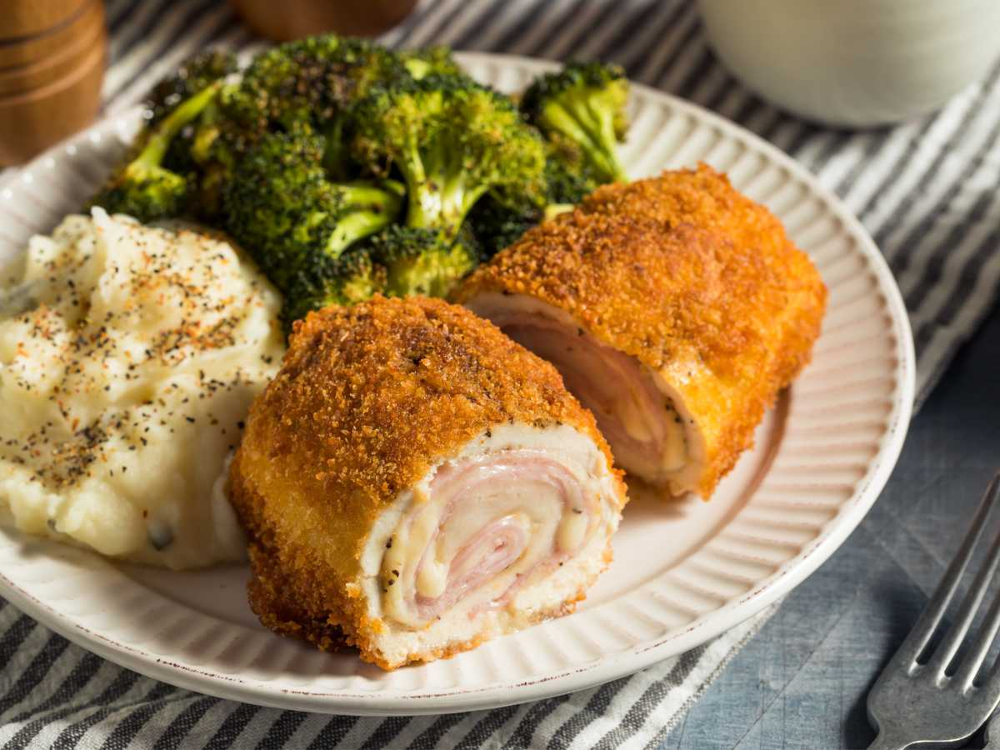
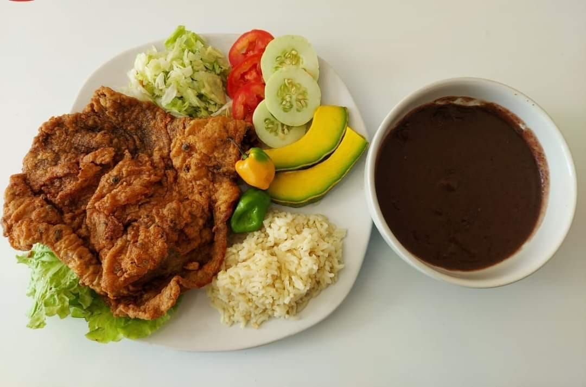
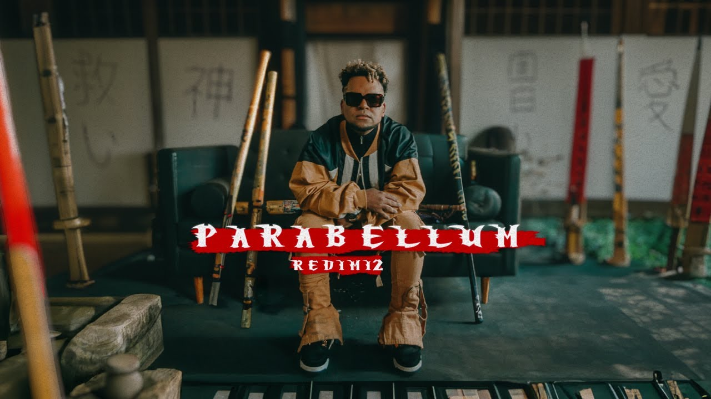

Mi presentación
Nombre
Hola, me llamo Bryan Gamaliel Chuc Viana
Edad
Tengo 18 años y estoy cerca de cumplir los 19 en aproximadamente 3 meses
Acerca de mi
Soy una persona que suele ser penosa en varias ocasiones, aunque cuando agarro confianza cambia la forma de dirigirme a los demás. Me gusta demasíado el mundo relacionado a la tecnología y todos sus derivados; me llama mucho la atención y me encanta el frontend, aunque, igual me gusta el backend, por lo tanto, me gustaría ser Fullstack, de igual manera, me encanta demasíado las Redes y Ciberseguridad
Mis comidas favoritas
-
Pechuga a la plancha

La pechuga a la plancha es un platillo saludable y sencillo de preparar que destaca por su sabor suave y jugoso. Este plato se elabora cocinando una pechuga de pollo sin piel a fuego medio en una sartén o plancha caliente, con un poco de aceite de oliva para evitar que se pegue. La pechuga a la plancha es conocida por su bajo contenido en grasas y alta en proteínas.
-
Cordon Bleu
El Cordon Bleu es un delicioso platillo que consiste en una pechuga de pollo rellena con jamón y queso, empanizada y luego frita o horneada. Este plato es conocido por su combinación crujiente por fuera y su interior jugoso y derretido.
-
Empanizado
El empanizado es una técnica culinaria que consiste en recubrir alimentos con una capa de pan rallado, harina o migas de pan antes de freírlos u hornearlos. Esta capa proporciona una textura crujiente y dorada al exterior del alimento, mientras mantiene el interior tierno y jugoso.
-
Enchiladas Suizas

Las enchiladas suizas son un platillo mexicano que consiste en tortillas de maíz rellenas de pollo desmenuzado, bañadas en una rica salsa verde de tomatillo y crema. Se cubren con queso gratinado y se hornean hasta que el queso se derrite y burbujea, ofreciendo una combinación deliciosa de sabores cremosos y picantes.
-
Espagueti Blanco

El espagueti blanco es un plato sencillo y cremoso que se prepara con pasta cocida al dente mezclada con una salsa de crema, queso parmesano, mantequilla y especias. Este platillo es conocido por su sabor suave y textura rica, ideal para acompañar con pollo, mariscos, o vegetales.
-
Fajitas de pollo

Las fajitas de pollo son un platillo mexicano popular que consiste en tiras de pechuga de pollo sazonadas y salteadas con pimientos y cebollas. Se sirven calientes, a menudo acompañadas de tortillas de harina y guarniciones como guacamole, crema agria y salsa.
Mis artistas y bandas músicales favoritas
-
Redimi2
Redimi2 cuyo nombre real es Willy González Cruz, es un reconocido rapero y cantante de música cristiana originario de República Dominicana. Su estilo combina ritmos urbanos con contenido espiritual, logrando conectar con una amplia audiencia tanto dentro como fuera de la comunidad cristiana.
-
Alex Zurdo

Alex Zurdo Alex Zurdo es un popular cantante y compositor de música cristiana urbana de Puerto Rico. Conocido por sus letras inspiradoras y su estilo contagioso, combina rap y reguetón para transmitir mensajes de fe y esperanza.
-
Ander Bock
Ander Bock es un destacado rapero y cantante de música cristiana urbana originario de México. Reconocido por sus letras sinceras y su estilo dinámico, utiliza el rap para compartir mensajes de fe, esperanza y reflexión espiritual.
-
Funky
Funky es un influyente cantante y productor de música cristiana urbana de Puerto Rico. Conocido por su estilo enérgico y letras positivas, ha sido una figura clave en el género, usando el reguetón y el rap para transmitir mensajes de fe y transformación.
-
Townix
Townix es un artista urbano joven con raíces en la música cristiana. Comenzó su carrera a los 16 años y ha seguido adelante con su fe como inspiración. Su música, incluyendo el sencillo "No me invites", promueve un mensaje de cambio y reflexión